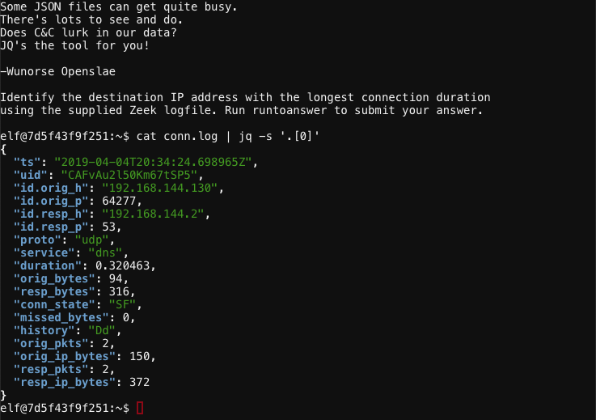
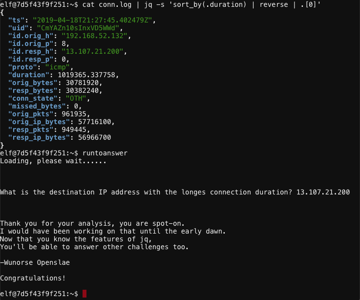

Wunorse Openslae - Zeek JSON Analysis#

Objective: Filter Out Poisoned Data Sources
Request#
Wunorse Openslae here, just looking at some Zeek logs.
I'm pretty sure one of these connections is a malicious C2 channel...
Do you think you could take a look?
I hear a lot of C2 channels have very long connection times.
Please use jq to find the longest connection in this data set.
We have to kick out any and all grinchy activity!
Video#
Resources#
Solution#
Start by displaying a single log entry and its properties using cat conn.log | jq -s '.[0]'.

Looks like the duration field contains the information we need. Execute cat conn.log | jq -s 'sort_by(.duration) | reverse | .[0]' to reverse sort by duration and show the log entry matching the longest connection time.

The destination IP address with the longest connection duration is 13.107.21.200.
Answer#
IP address: 13.107.21.200
Hint#
That's got to be the one - thanks!
Hey, you know what? We've got a crisis here.
You see, Santa's flight route is planned by a complex set of machine learning algorithms which use available weather data.
All the weather stations are reporting severe weather to Santa's Sleigh. I think someone might be forging intentionally false weather data!
I'm so flummoxed I can't even remember how to login!
Hmm... Maybe the Zeek http.log could help us.
I worry about LFI, XSS, and SQLi in the Zeek log - oh my!
And I'd be shocked if there weren't some shell stuff in there too.
I'll bet if you pick through, you can find some naughty data from naughty hosts and block it in the firewall.
If you find a log entry that definitely looks bad, try pivoting off other unusual attributes in that entry to find more bad IPs.
The sleigh's machine learning device (SRF) needs most of the malicious IPs blocked in order to calculate a good route.
Try not to block many legitimate weather station IPs as that could also cause route calculation failure.
Remember, when looking at JSON data, jq is the tool for you!